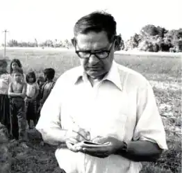

Новеліст, журналіст і активіст з питань праці Філіп Боноскі, Нью-Йорк, помер у суботу (2 березня 2013 р.) В Центрі здоров'я Коббл Хілл у Брукліні. Він був 96 років.
Він народився в 1916 році у сім'ї литовських іммігрантів у Дакесне, Пенсільванія, в центрі вугільної та металургійної промисловості. Як і його батько та брати, він працював на металургійному заводі Duquesne, але не міг знайти роботу в депресії. Боноскі "проїхав по рейках" і врешті-решт вирушив у притулок для бездомних у Вашингтоні, де знаходився притулок під перехідним бюро, де його соціальний працівник Енн Террі Уайт, одружився з офіцером казначейства Гаррі Декстером Уайтом. Через допомогу від білогвардійців, непарних робочих місць та щомісячного платежу в розмірі 20 доларів від Національної молодіжної адміністрації він зміг завершити два роки навчання у Вільсонському училище. Він був найнятий проектом розробника адміністрації робіт (WPA) для керівництва Вашингтону Д.К. Він приєднався до Комуністичної партії США 1938 року.
Боноскі одночасно служив президентом штату Вашингтон, департамент Альянсу робітників, який надав уряду відповідальність за потреби безробітних у пошуку робочих місць, житла, харчування та охорони здоров'я. Він очолив делегацію на зустрічі з Елеонорою Рузвельтом в 1940 році, широко повідомляється в місцевій пресі. Відомий активіст у місті, він виступав на демонстраціях і свідчив перед Конгресом. Під час Другої світової війни Боноський став повноправним організатором Комуністичної партії. Наприкінці 40-х років Боноскіприбув до Нью-Йорка, переконавшись у тому, що він міг внести свій найважливіший внесок завдяки письмовій формі. Він виготовив свої перші книги в 1953 році: роман "Біла долина" (перевидана Університетом штату Іллінойс, 1997 р.) Та братом Біллом Маккі, про керівника авто робітників. Він провів письмові семінари в Школі комуністичної партії Джефферсона та в Гарлемі. Він допоміг літературному журналу Masses & Mainstream у 1950-х роках. Другий його роман "Чарівна папороть" з'явився в 1960 році, а потім — "Дракон Пінк на Старому Білі", присвячений китайській культурі. Його давня дружба з художницею Алісою Нейл детально описана у фільмі Фієба Хобана "Аліса Ніл": "Мистецтво не сидіти" і "Едді Неєл", що є визнаним документальним фільмом художника. Як журналіст, Боноскі опитав в'єтнамського лідера Хо Ши Міна в середині 1960-х років. Він був культурним редактором "Щоденного світу" Комуністичної партії. Пізніше Бонський інтерв'ю з афганськими лідерами напередодні розпалювання Талібану і був одним із перших західних кореспондентів, які відвідали Камбоджу після вислання червоних кхмерів. Опубліковано кілька томах його закордонного репортажу. Міжнародні видавці випустили свої оповідання в "Пташині в її волоссі" в 1987 році. Бонанський належав до ради журналу "Політичні питання" протягом багатьох років. Його дружина Віра Боноскі та син Даніеля Боноського померли від нього. Його пережила його дочка Нора Боноскі та її чоловік Даніель Розенберг; три онуків Селіна Розенберг, Габріель Розенберг та Олексій Боноскі; і правнук Себастьян Боноскі.